Свій застосунок для домашніх батарей: Aolithium (плата JBD) і Logic Power (плата JK BMS). Показує заряд, кожну комірку, відключення світла, сам пише історію й сповіщає. Лише читає батарею — нічого в ній не змінює.
Our own app for home batteries: Aolithium (JBD BMS) and Logic Power (JK BMS). It shows charge, each cell and power outages, records history by itself and notifies you. It only reads the battery and changes nothing in it.
Bluetooth; інтернет — лише для оновленьBluetooth; internet only for updatesлише читає платуread-onlyзапис у фоніbackground recordingукраїнська · EnglishУкраїнська · English
Дані батареї лишаються на телефоні й нікуди не передаються. Інтернет застосунок використовує лише для оновлень з Google Диска автора. Без реклами й аналітики.
Battery data stays on the phone and is not sent anywhere. The app uses the internet only for updates from the author's Google Drive. No ads, no analytics.
Aolithium Live 0.4.18 · github.com/faric-ua/aolithium-live
Перший запуск
First start
Один раз дати застосунку те, без чого він не бачить батарею. Поки чогось бракує, на головній угорі є картка «Що потрібно, щоб бачити батарею» з кнопками.
Give the app, once, what it needs to see the battery. While something is missing, the home screen shows the card "What is needed to see the battery" at the top, with buttons.
Відкрий Aolithium Live. Є картка вгорі — натисни Дозволити.
Android 12 і новіші (A26) питають «Пристрої поблизу» — Дозволити. Місцезнаходження не потрібне.
Android 8–11 (Huawei Mate 10 Lite, M30s) питають місцезнаходження — Дозволити, і потрібна ввімкнена геолокація (Увімкнути геолокацію). Так Android влаштував пошук Bluetooth; місцезнаходження нікуди не передається.
Bluetooth вимкнено — Увімкнути Bluetooth.
Сповіщення Android спитає, коли ввімкнеш «Запис у фоні» чи сповіщення, — Дозволити.
Open Aolithium Live. If there is a card at the top, tap Allow.
Android 12 and newer (A26) ask for "Nearby devices" — Allow. Location is not needed.
Android 8–11 (Huawei Mate 10 Lite, M30s) ask for location — Allow, and location must be turned on (Turn on location). This is how Android does Bluetooth search; your location is not sent anywhere.
Bluetooth is off — Turn on Bluetooth.
Android asks about notifications when you turn on "Background recording" or notifications — Allow.
Дозвіл
Навіщо
Пристрої поблизу / місцезнаходження
знайти батарею й підключитись (Bluetooth)
Сповіщення
«Світло зникло», «Батарея повна»… і рядок «Запис у фоні» в шторці
Без обмежень у фоні
щоб Android не приспав запис у фоні (за бажанням)
Permission
What for
Nearby devices / location
find the battery and connect (Bluetooth)
Notifications
"Power outage", "Battery full"… and the "Background recording" line in the shade
Unrestricted in background
so Android does not pause background recording (optional)
Реєстрації й акаунта не треба. Інтернет — лише для оновлень застосунку (див. «Оновити з Google Диска»); батареї він не потрібен. Застосунок ставиться поруч з Aolithium 1.3 і нічого в ньому не чіпає.
No sign-up, no account. The internet is used only for app updates (see "Update from Google Drive"); the battery does not need it. The app installs next to Aolithium 1.3 and does not touch it.
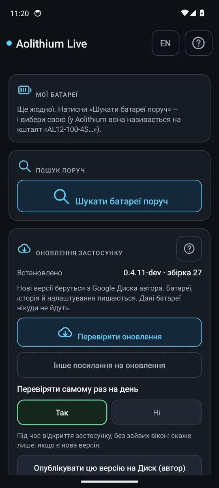
Головна: «Мої батареї» і «Шукати батареї поруч».
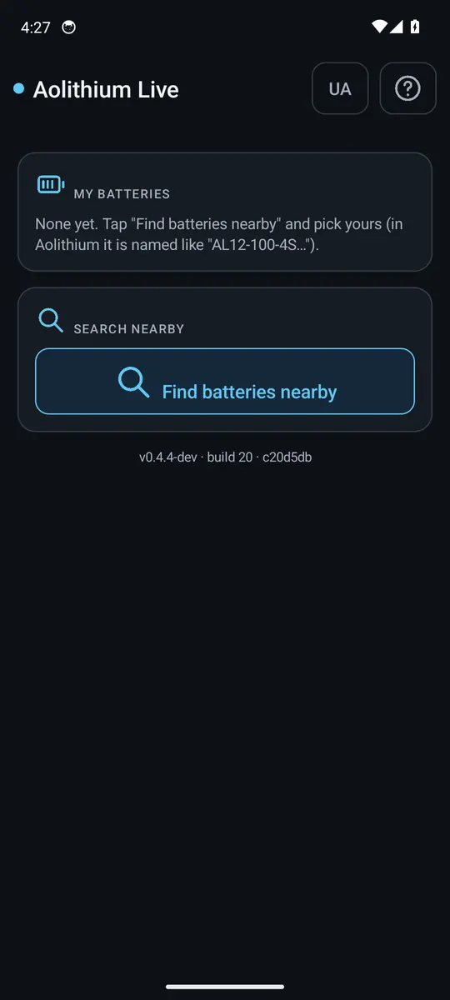
Home: "My batteries" and "Find batteries nearby".
Підключити батарею
Connect the battery
Батарея говорить через Bluetooth на кілька метрів. Плата тримає лише одне підключення — тому старий застосунок треба закрити.
The battery talks over Bluetooth, a few meters. The BMS keeps only one connection, so close the old app first.
Закрий Aolithium 1.3 (і застосунок JK BMS / Logic Power) на всіх телефонах поруч.
Головна → Шукати батареї поруч. Пошук іде кілька секунд, його можна зупинити.
Батарея — угорі списку: назва на кшталт «AL12-100-4S…», під нею «Плата JBD (як в Aolithium)» або «Плата JK BMS» і сигнал словом. Чужі пристрої сховані в «Інші пристрої поруч».
Торкнись її — за кілька секунд угорі На зв'язку, числа оновлюються раз на 2 секунди.
Наступного разу вона вже в «Моїх батареях» — шукати не треба. Назву можна змінити: «Ще» → Перейменувати.
Сховав застосунок — через 5 с він відключається, і батарея знову вільна для Aolithium 1.3.
Close Aolithium 1.3 (and the JK BMS / Logic Power app) on all phones nearby.
Home → Find batteries nearby. Search takes a few seconds; you can stop it.
The battery is at the top of the list: a name like "AL12-100-4S…", below it "JBD BMS (as in Aolithium)" or "JK BMS" and the signal in words. Other devices are hidden under "Other devices nearby".
Tap it. In a few seconds the top shows Connected; numbers refresh every 2 seconds.
Next time it is already in "My batteries" — no search needed. You can change the name: "More" → Rename.
When you hide the app, it disconnects after 5 s, and the battery is free for Aolithium 1.3 again.
Одночасно плату читає лише один застосунок. Сховай Aolithium Live — за 5 с плата вільна для іншого.Only one app reads the BMS at a time. Hide Aolithium Live — in 5 s the BMS is free for another.
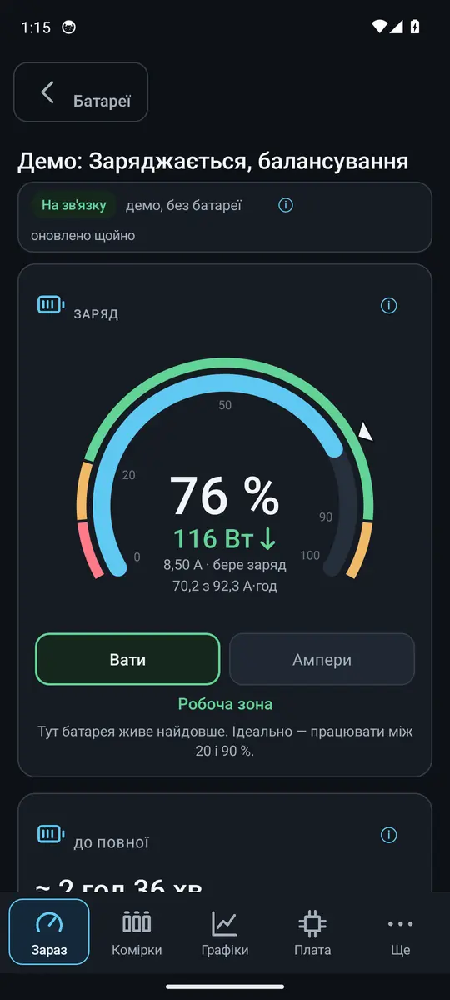
Підключено: угорі «На зв'язку», нижче — вкладка «Зараз».
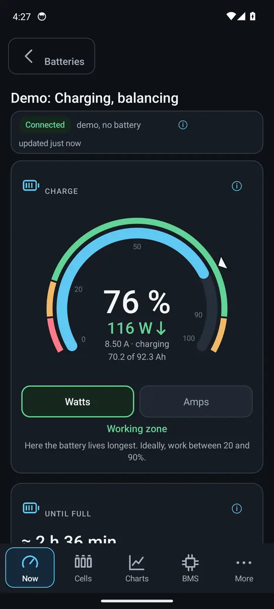
Connected: "Connected" at the top, the "Now" tab below.
Не видно батареї, рветься зв'язок
Battery not found, link drops
Найчастіша причина — відстань. Bluetooth дістає кілька метрів, стіни й метал з'їдають сигнал.
The most common reason is distance. Bluetooth reaches a few meters; walls and metal eat the signal.
Сигнал біля назви: «сильний», «середній», «слабкий». Слабкий (−88 dBm і менше) — підійди ближче, на 1–3 м: з таким сигналом підключення зривається.
Батарею вже тримає інший телефон (Aolithium 1.3 чи цей застосунок) — тоді її не видно в пошуку. Закрий там.
Android 8–11: без дозволу на місцезнаходження й увімкненої геолокації пошук нічого не знайде.
Bluetooth вимкнено — на головній буде кнопка Увімкнути Bluetooth.
Батарея далеко, а подивитись хочеться: її все одно можна відкрити з «Моїх батарей» — усі вкладки покажуть останні прочитані дані з часом (або прочерки, якщо зв'язку ще не було).
Signal next to the name: "strong", "medium", "weak". Weak (−88 dBm or less) — move closer, within 1–3 m: with such a signal the connection drops.
Another phone already holds the battery (Aolithium 1.3 or this app) — then search cannot see it. Close it there.
Android 8–11: without the location permission and location turned on, search finds nothing.
Bluetooth is off — the home screen shows Turn on Bluetooth.
The battery is far away, but you want to look: you can still open it from "My batteries" — all tabs show the last data read, with the time (or dashes if there was no connection yet).
Рядок «Зв'язок» угорі
The "Connection" line at the top
Під назвою батареї — завжди той самий рядок сталої висоти, тож спідометр під ним не стрибає. Ліворуч — стан:
Under the battery name there is always the same line of fixed height, so the speedometer below does not jump. On the left — the state:
На зв'язкуПідключаюсь…Читаю плату…Зв'язок втраченоНе вдалосьПлата мовчить
ConnectedConnecting…Reading BMS…Connection lostFailedBMS is silent
Поруч — коротко, що відбувається («повтор 2 з 3 · −90 dBm, слабкий»), а другим рядком — чиї числа нижче: «оновлено щойно» або «нижче — дані від 19.10 22:04». Зв'язок зірвався — праворуч кнопка Ще раз.
Next to it — briefly what is happening ("retry 2 of 3 · −90 dBm, weak"), and the second line says whose numbers are below: "updated just now" or "below — data from 19.10 22:04". If the link drops, a Retry button appears on the right.
Торкнись рядка — вікно з повним поясненням і кнопками Підключити ще раз та Журнал зв'язку.
Tap the line — a window with the full explanation and the Reconnect and Connection log buttons.
Не допомогло? «Журнал зв'язку» (торкнись рядка «Зв'язок» або «Ще») → «Поділитися» → надішли Claude. У журналі — що і коли відповіла плата, без особистих даних; свіжіші записи — зверху. Журнал пишеться частинами й переживає перезапуск застосунку: Зберегти все — увесь журнал (до 20 частин по 200 рядків) одним файлом.
Still no luck? "Connection log" (tap the "Connection" line, or "More") → "Share" → send it to Claude. The log shows what the BMS answered and when, with no personal data; newest entries are on top. The log is kept in parts and survives an app restart: Save all — the whole log (up to 20 parts of 200 lines) as one file.
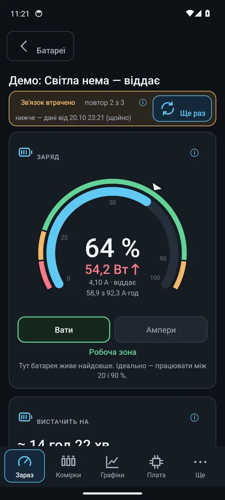
«Зв'язок втрачено»: рядок той самий, з'явилась кнопка «Ще раз», нижче — останні дані.
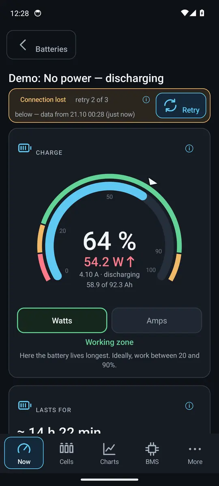
"Connection lost": the same line, a "Retry" button, the last data below.
Зараз
Now
Головне одним поглядом: скільки заряду, віддає батарея чи заряджається, і на скільки вистачить.
The main things at a glance: how much charge, whether the battery is giving power or charging, and how long it will last.
Зони на ободі: червона — глибокий розряд, помаранчева — мало, зелена — робоча зона (тут батарея живе найдовше), помаранчева вгорі — повна.Zones on the rim: red — deep discharge, orange — low, green — working zone (the battery lives longest here), orange at the top — full.
Під відсотками — вати або ампери (перемикач ВатиАмпери). Червоне й стрілка ▲ вгору — батарея віддає (світла нема). Зелене й стрілка ▼ вниз — заряджається.
Нижче — струм і «70,2 з 92,3 А·год»: скільки лишилось з повної ємності.
«Вистачить на» (коли віддає): час до 20 %, 10 % і 5 % — смуга зелена / жовта / червона. Число не скаче: рахується з середнього струму за 2 хв і змінюється, лише коли струм стабільно змінився.
«До повної» (коли заряджається): час до 100 % (заряд зупиняє сама плата) і скільки додасть 1–2 години такого заряду — зручно вирішити, скільки ганяти генератор.
«Стан плати»: заряд і розряд дозволені, чи вирівнює комірки, чи спрацював захист. Спрацював — угорі червона картка «Що спрацювало» з поясненням, що робити.
Under the percent — watts or amps (the WattsAmps switch). Red with an arrow ▲ up — the battery is giving power (no grid). Green with an arrow ▼ down — charging.
Below — the current and "70.2 of 92.3 Ah": how much is left of full capacity.
"Lasts for" (when discharging): time to 20 %, 10 % and 5 % — a green / yellow / red strip. The number does not jump: it uses the average current over 2 min and changes only when the current has really changed.
"Until full" (when charging): time to 100 % (the BMS stops charging by itself) and how much 1–2 hours of such charging will add — handy for deciding how long to run the generator.
"BMS state": charge and discharge allowed, whether it balances cells, whether a protection triggered. If it did, a red "What triggered" card appears at the top, explaining what to do.
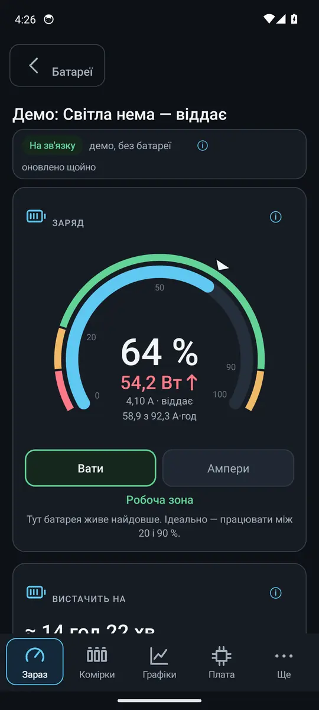
Світла нема: червоні вати, «Вистачить на».
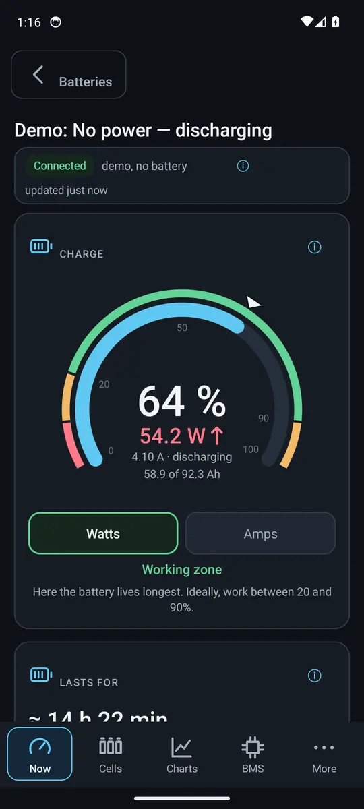
No power: red watts, "Lasts for".
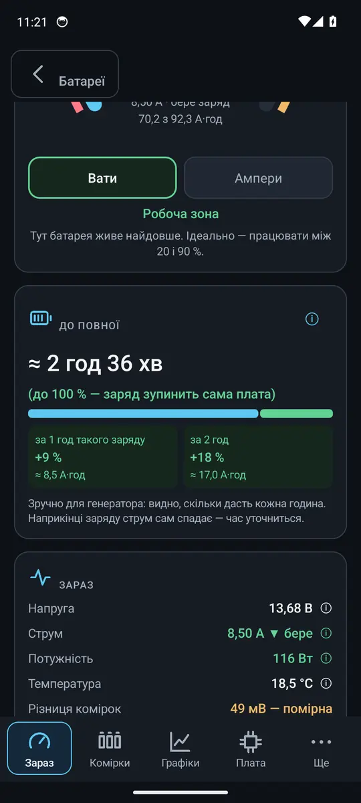
Заряджається: «До повної» і скільки дасть година.
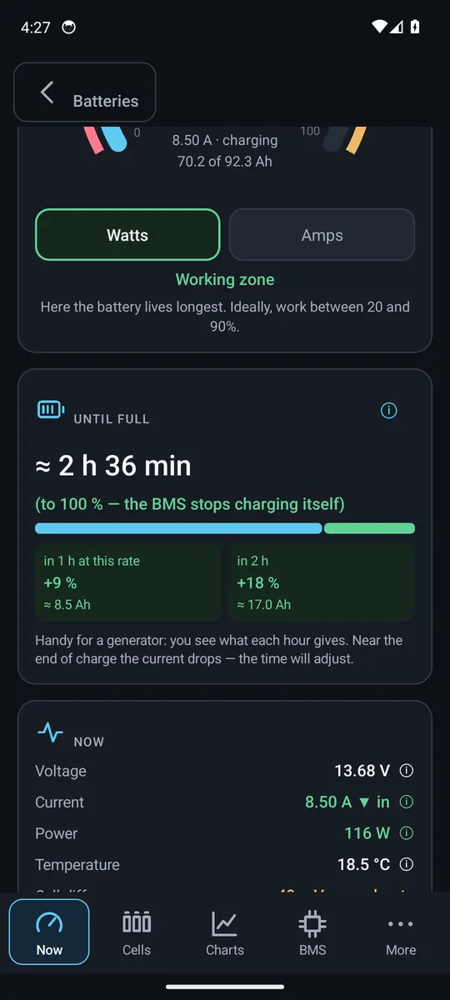
Charging: "Until full" and what an hour adds.
Комірки
Cells
У батареї 4 комірки по ~3,3 В, з'єднані ланцюжком: струм через усі однаковий, а напруга росте й падає трохи по-різному. Тут видно кожну.
The battery has 4 cells of ~3.3 V in a chain: the current through all of them is the same, but the voltage rises and falls a little differently. Here you see each one.
Плитка на кожну комірку: напруга, смужка, на скільки мВ від середньої і як змінилась за хвилину (▲ росте / ▼ падає; з'являється через хвилину; ±1 мВ — «без змін», це шум вимірювання).
Рамки:найвища — блакитна, найнижча — помаранчева. Кілька рівних — рамка в усіх. Різниця 1 мВ і менше — без рамок.
≈ вирівнюється — плата зараз підтягує цю комірку до інших (наприкінці заряду це нормально).
Різниця між найвищою й найнижчою: до 30 мВ — рівно, 30–100 — помірно, понад 100 — варто стежити (орієнтир, не діагноз).
Нижче: як плата вирівнює комірки, різниця за останню годину, усі датчики температури.
A tile for each cell: voltage, a bar, how many mV from average, and how it changed in a minute (▲ rising / ▼ falling; appears after a minute; ±1 mV means "no change", it is measurement noise).
Frames:highest — blue, lowest — orange. Several equal ones — all get a frame. A difference of 1 mV or less — no frames.
≈ balancing — the BMS is now pulling this cell level with the others (normal at the end of charge).
Difference between the highest and the lowest: up to 30 mV is even, 30–100 is moderate, over 100 is worth watching (a guide, not a diagnosis).
Below: how the BMS balances cells, the difference over the last hour, all temperature sensors.
У Logic Power (JK BMS) тут ще балансир — з якої комірки в яку переливає і скільки ампер — та опір дроту кожної комірки (див. «Logic Power»).
For Logic Power (JK BMS) there is also the balancer — from which cell to which it moves charge, and how many amps — and each cell's wire resistance (see "Logic Power").
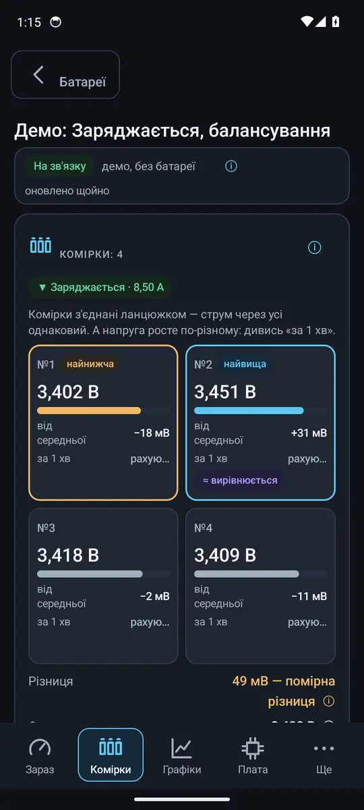
Заряд з балансуванням: №1 найнижча, №2 найвища й вирівнюється.
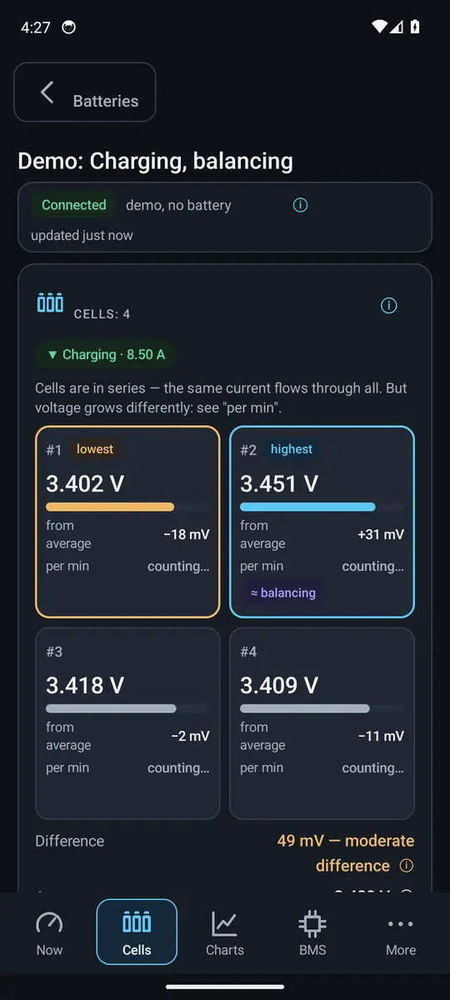
Charging with balancing: #1 lowest, #2 highest and balancing.
Графіки
Charts
Що було, поки ти не дивився: відключення світла, найнижчий заряд за днями, генератор, комірки, зарядний. І вся історія за 15 хв … 7 днів.
What happened while you were not looking: power outages, lowest charge by day, the generator, cells, the charger. And all history for 15 min … 7 days.
Відключення світла
Power outages
Плитки за 7 днів: скільки відключень, скільки годин без світла, скільки батарея віддала, найнижчий заряд. Під ними — кожне відключення: коли, скільки тривало, з якого % до якого, скільки А·год і Вт·год, середня й пікова потужність. Триває зараз — червона рамка «Світла нема з 18:00».
Tiles for 7 days: how many outages, hours without power, how much the battery gave, the lowest charge. Below — each outage: when, how long, from which % to which, how many Ah and Wh, average and peak power. If one is going on now — a red frame "No power since 18:00".
Як застосунок це бачить
How the app sees it
Поки світло є, інвертор лише заряджає або батарея стоїть повна. Батарея віддає більше 0,5 А довше 3 хвилин — отже, світла нема. Короткі стрибки не рахуються.
While there is power, the inverter only charges or the battery stands full. If the battery gives more than 0.5 A for longer than 3 minutes, there is no power. Short spikes do not count.
Найнижчий заряд за днями
Lowest charge by day
Стовпчик на день — видно «хвилі»: щодня нижче → генератор → знову вгору. Торкнись дня — позначка «Г» (працював генератор): застосунок сам не відрізнить генератор від мережі.
A bar per day — you see the "waves": lower every day → generator → up again. Tap a day to mark "G" (the generator worked): the app cannot tell the generator from the grid by itself.
Хто відстає · Зарядний пристрій
Lagging cell · Charger
Яка комірка найчастіше найнижча наприкінці заряду і яка тоді різниця. «Зарядний пристрій» — до скількох вольт доводить батарею: для 4 комірок LiFePO4 норма 13,8–14,6 В.
Which cell is most often the lowest at the end of charge, and what the difference is then. "Charger" — up to how many volts it brings the battery: for 4 LiFePO4 cells the norm is 13.8–14.6 V.
Історія — лінії заряду, струму, потужності, напруги, температури й комірок; скільки заряджено й віддано. Період: 15 хв1 год6 год24 год7 днів. Торкнись графіка й веди пальцем убік — побачиш значення.
Звідки дані: поки застосунок відкритий і на зв'язку — запис раз на 10 с; з «Записом у фоні» — ще й раз на ~5 хв, коли закритий. Зберігається 90 днів у телефоні.
History — lines for charge, current, power, voltage, temperature and cells; how much was charged and given. Period: 15 min1 h6 h24 h7 days. Touch a chart and slide your finger sideways to see values.
Where the data comes from: while the app is open and connected — a record every 10 s; with "Background recording" — also every ~5 min while it is closed. Kept for 90 days on the phone.
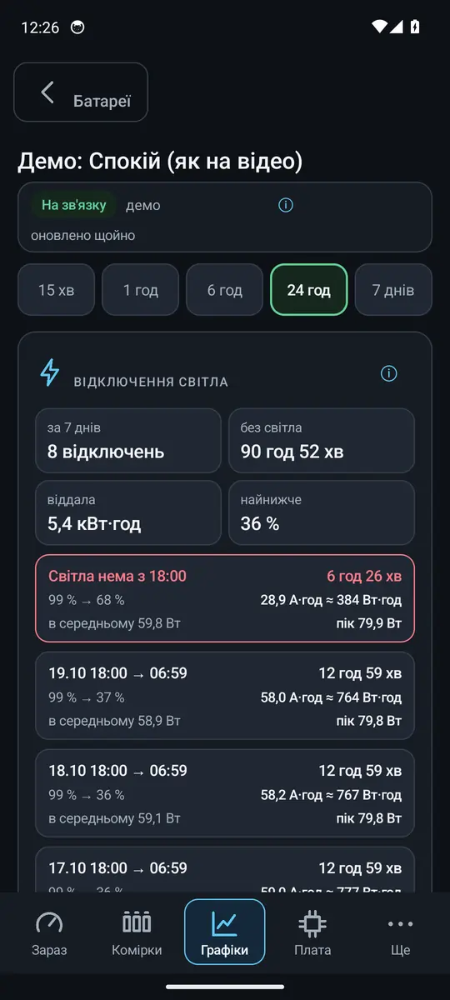
«Відключення світла»: плитки за 7 днів і кожне відключення.
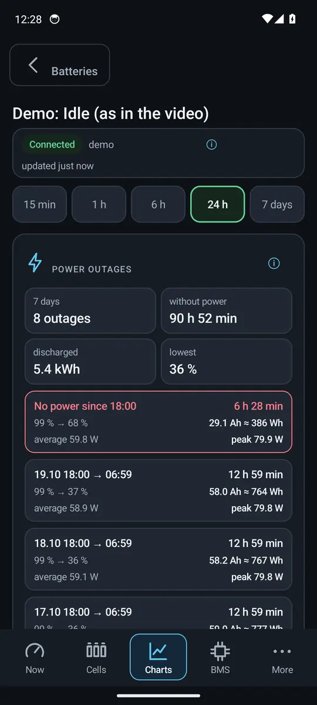
"Power outages": tiles for 7 days and each outage.
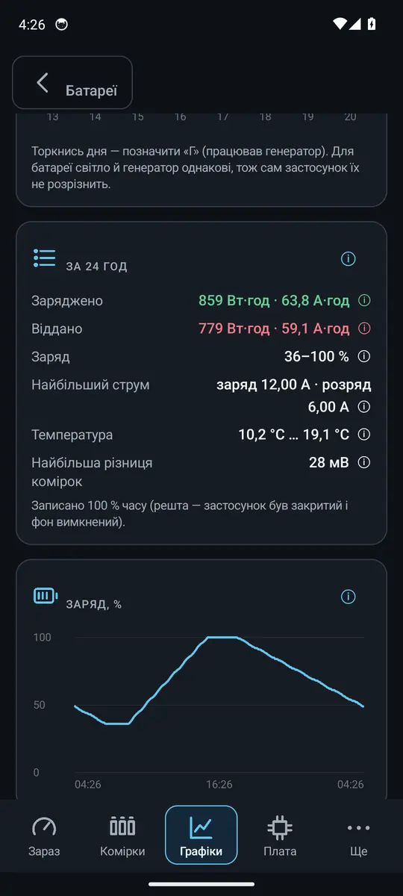
«Найнижчий заряд за днями» і підсумок за 24 год; нижче — «Хто відстає», «Зарядний пристрій».
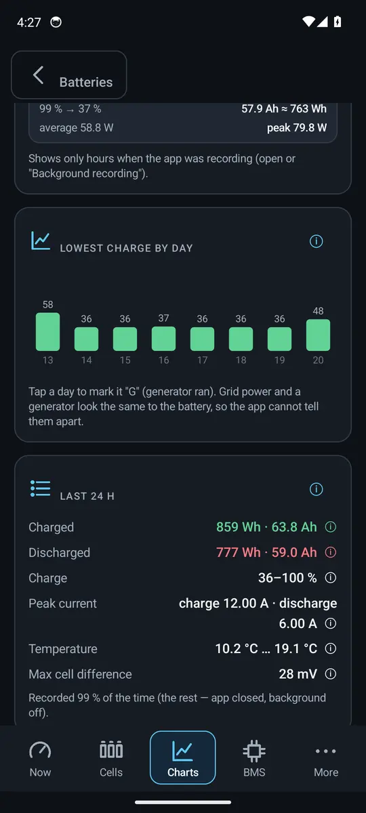
"Lowest charge by day" and the 24 h summary; further down — "Lagging cell", "Charger".
Плата
BMS
Що плата знає про себе й про батарею — те, чого Aolithium 1.3 не показував.
What the BMS knows about itself and the battery — things Aolithium 1.3 did not show.
Здоров'я: повна ємність, яку знає плата (поруч з етикеткою 100 А·год), залишок, цикли, енергія повної батареї в кВт·год.
Плата: тип (JBD чи JK), назва, версія програми, дата виготовлення, скільки комірок і датчиків температури.
Захисти за весь час: скільки разів плата вмикала кожен захист. Торкнись рядка — що це і що робити. «Перезаряд комірки» наприкінці заряду — порада перевірити напругу зарядного.
Health: the full capacity the BMS knows (next to the 100 Ah label), what is left, cycles, the energy of a full battery in kWh.
BMS: type (JBD or JK), name, software version, manufacture date, how many cells and temperature sensors.
Protections, all time: how many times the BMS turned on each protection. Tap a row — what it is and what to do. "Cell overcharge" at the end of charge — a hint to check the charger voltage.
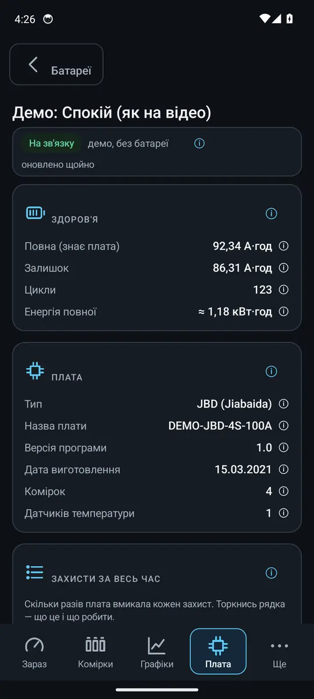
«Плата»: здоров'я і все про плату.
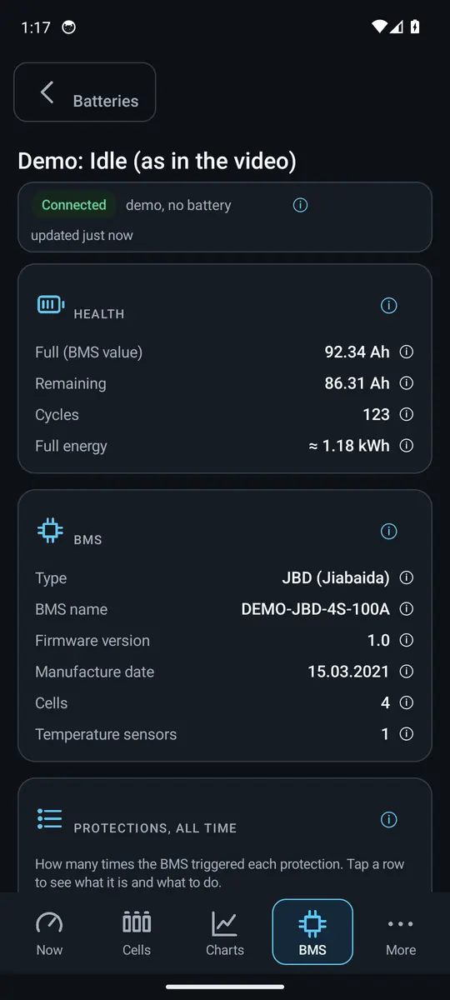
"BMS": health and everything about the board.
Ще
More
Налаштування цієї батареї, історія, довідник і дії.
Settings for this battery, history, the glossary and actions.
Картка
Що там
Запис у фоні
писати раз на ~5 хв, навіть коли застосунок закритий — окремий розділ
Сповіщення
перемикачі, «Перевірити сповіщення», дзвінок при серйозній тривозі («Номери для тривоги», «Перевірка тривоги») — окремий розділ
чотири на вибір: А — батарея з блискавкою, Б — кільце заряду, В — рівень заряду, Г — батарея з пульсом. Торкнись іншого → «Поміняти». Застосунок може на мить закритися — відкрий знову; якщо значок зник з головного екрана — перетягни його ще раз зі списку застосунків
Дії
Перейменувати, Підключити ще раз, Журнал зв'язку (там же — «Дані для перевірки»), Прибрати зі списку
Історія
скільки записано, як часто, 90 днів; «Зберегти CSV (таблиця)» — Android спитає, куди зберегти; «Стерти історію цієї батареї» — лише з підтвердженням
Довідник
що означає кожен показник, групами
Інструкція
відкриває цю інструкцію
Card
What is there
Background recording
record every ~5 min, even when the app is closed — its own section
Notifications
switches, "Test notifications", call on a serious alarm ("Alarm numbers", "Test alarm") — its own section
four to choose from: A — battery with a bolt, B — charge ring, C — charge level, D — battery with a pulse. Tap another one → "Change". The app may close for a moment — open it again; if the icon disappeared from the home screen, drag it there again from the app list
Actions
Rename, Reconnect, Connection log (with "Check data" there), Remove from list
History
how much is recorded, how often, 90 days; "Save CSV (table)" — Android asks where to save; "Clear this battery's history" — only with confirmation
Glossary
what each value means, in groups
Guide
opens this guide
Значок ⓘ
The ⓘ icon
Кожен рядок чи картка з ⓘ — торкнись, і відкриється пояснення: що це, яка норма, коли звернути увагу.
Tap any line or card with ⓘ to open an explanation: what it is, what is normal, when to pay attention.
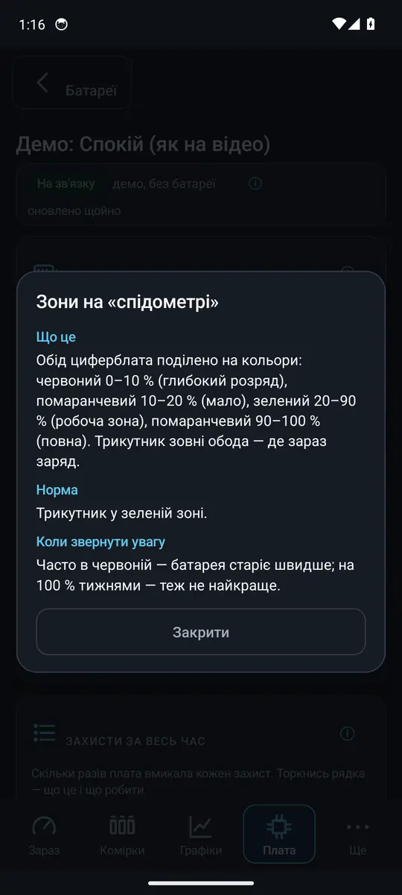
Пояснення за ⓘ: зони заряду.
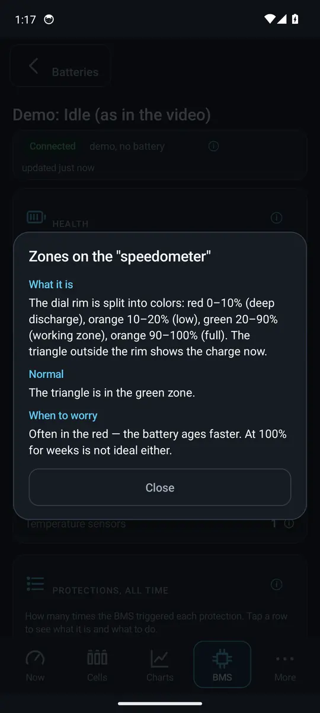
An ⓘ explanation: charge zones.
Запис у фоні
Background recording
Щоб бачити відключення, що були без тебе, і отримувати сповіщення, коли застосунок закритий. Раз на ~5 хв телефон коротко підключається, записує показники й відпускає батарею.
To see outages that happened while you were away, and to get notifications while the app is closed. Every ~5 min the phone connects briefly, records values and releases the battery.
Читання триває секунди. Відкритий екран батареї пише сам (раз на 10 с) — фон тоді чекає.A read takes seconds. The open battery screen records by itself (every 10 s) — background waits then.
Android спитає Bluetooth і сповіщення — Дозволити. У шторці з'явиться «Запис у фоні · раз на 5 хв» з числами батареї й часом останнього читання вгорі.
Щоб Android не приспав запис — Не обмежувати у фоні (кнопка в тій самій картці, поки обмеження є).
Open the battery → "More" → the "Background recording" card → On.
Android asks for Bluetooth and notifications — Allow. The shade shows "Background recording · every 5 min" with the battery numbers and the last read time at the top.
So Android does not pause recording — Don't restrict in background (a button in the same card while the restriction is on).
Запис у фоніBackground recording
УвімкненоOnВимкненоOff
Останній запис21:05 · стоїть
Last record21:05 · idle
Aolithium Live21:05
Запис у фоні · раз на 5 хвBackground recording · every 5 minAL12-100-4S: 100 % · 13,36 В · стоїтьAL12-100-4S: 100 % · 13.36 V · idleВимкнутиTurn off
Лише поруч з батареєю: Bluetooth дістає кілька метрів. Далеко — у шторці «нема зв'язку — батарея далеко», нічого не пишеться.
Не вийшло — ще раз через 2 хв (двічі поспіль), потім знову раз на 5 хв: на краю дальності друга спроба часто вдається, а коли телефон справді далеко, фон не ганяє Bluetooth зайвий раз.
Після перезапуску телефона й після оновлення застосунку запис відновлюється сам.
Перемикач — окремо для кожної батареї. Вимкнути — тут або кнопкою «Вимкнути» в шторці.
У демо не працює — лише зі справжньою батареєю.
Only near the battery: Bluetooth reaches a few meters. Far away, the shade says "no connection — battery far away" and nothing is recorded.
Failed — again in 2 min (twice in a row), then every 5 min again: at the edge of range a second try often works, and when the phone is really far, background does not use Bluetooth for nothing.
After a phone restart and after an app update, recording resumes by itself.
The switch is per battery. Turn it off here or with the "Turn off" button in the shade.
Does not work in demo — only with a real battery.
Сповіщення
Notifications
Вісім видів, кожен вмикається окремо: батарея → «Ще» → «Сповіщення». Перемикачі спільні для всіх батарей, за замовчуванням усі ввімкнені.
Eight kinds, each turned on separately: battery → "More" → "Notifications". The switches are shared by all batteries; all are on by default.
Сповіщення
Коли приходить
Світло зникло / повернулось
батарея почала віддавати (світла нема) — і коли перестала: скільки не було, з якого % до якого
Мало заряду
на 20 %, 10 % і 5 % — скільки ще вистачить
Батарея повна
дійшла до повної — щоб вчасно вимкнути генератор
Захист плати
спрацював захист, і коли плата вимкнула заряд чи розряд (і коли знову ввімкнула)
Велика різниця комірок
30 мВ посеред заряду (15–90 %) або 100 мВ будь-де нижче 95 %
Холод / спека
нижче 0 °C або вище 50 °C
Нема даних понад 1 год
тихе, без звуку: запис у фоні годину не дістає батарею
Заряджається (смужка)
тихе, поки батарея заряджається: відсотки смужкою, вати й скільки до повної; зникає саме, коли повна або заряд припинився
Notification
When it comes
Power outage / restored
the battery started giving power (no grid) — and when it stopped: how long it lasted, from which % to which
Low charge
at 20 %, 10 % and 5 % — how long it will still last
Battery full
it reached full — to turn off the generator in time
BMS protection
a protection triggered, and when the BMS turned off charge or discharge (and when it turned it back on)
quiet, no sound: background recording has not reached the battery for an hour
Charging (progress bar)
quiet, while the battery charges: percent as a bar, watts and time to full; goes away by itself when full or when charging stops
Aolithium Live18:02
Світло зниклоPower outageБатарея віддає 120 Вт · 99 % · вистачить ≈ 8 год 40 хв до 20 %Battery discharging at 120 W · 99 % · lasts ≈ 8 h 40 min to 20 %
Aolithium Live07:15
Батарея повна — 100 %Battery full — 100 %Плата сама зупинила заряд.The BMS stopped charging by itself.
Aolithium Live05:40
Заряджається · 64 %Charging · 64 %330 Вт · до повної ≈ 1 год 20 хв330 W · to full ≈ 1 h 20 min
Кожне — один раз, доки стан не мине (наприклад, «Мало заряду 20 %» знову — лише після того, як батарея піднялась вище).
Коли застосунок закритий — приходять лише з увімкненим «Записом у фоні» і лише поки телефон поруч з батареєю.
Захист «перезаряд комірки» наприкінці заряду — це «Батарея повна», не тривога.
Перевірити сповіщення — у шторці «Перевірка: світло зникло» зі звуком; торкнись — відкриється батарея.
«Заряджається» оновлюється з кожним записом (з «Записом у фоні» — раз на ~5 хв і щойно розблокуєш телефон). Немає нових даних 20 хв — зникає саме, щоб у шторці не висіли старі відсотки.
Each comes once, until the state passes (for example, "Low charge 20 %" comes again only after the battery went back above it).
When the app is closed — they come only with "Background recording" on and only while the phone is near the battery.
The "cell overcharge" protection at the end of charge means "Battery full", not an alarm.
Test notifications — the shade shows "Test: power outage" with sound; tap it and the battery opens.
"Charging" updates with each record (with "Background recording" — every ~5 min and as soon as you unlock the phone). No new data for 20 min — it goes away by itself, so old percents do not hang in the shade.
Дзвінок при серйозній тривозі
Call on a serious alarm
Коли плата каже про перегрів, надмірний струм чи коротке замикання (або стало гаряче), у шторці з'являються кнопки «Подзвонити 101» і «Подзвонити …» (твій номер — сусід, родич), а в Telegram сторож дописує ці номери до тривоги. Застосунок сам не дзвонить — кнопка лише відкриває набір номера, натискаєш ти. Холод, перерозряд, різниця комірок — без кнопок: це не привід дзвонити.
When the BMS reports overheating, overcurrent or a short circuit (or it got hot), the shade shows "Call 101" and "Call …" buttons (your number — a neighbour, a relative), and in Telegram the guard adds these numbers to the alarm. The app never calls by itself — the button only opens the dialer, you tap call. Cold, overdischarge, cell difference — no buttons: no reason to call.
«Ще» → «Сповіщення» → Номери для тривоги → 101 так / ні, ім'я й номер → «Зберегти».
Перевірка тривоги — у шторці зразок «ПЕРЕВІРКА тривоги» з кнопками, і (якщо сторож увімкнено) такий самий зразок у Telegram.
"More" → "Notifications" → Alarm numbers → 101 yes / no, a name and a number → "Save".
Test alarm — a "TEST alarm" sample with the buttons in the shade, and (if the guard is on) the same sample in Telegram.
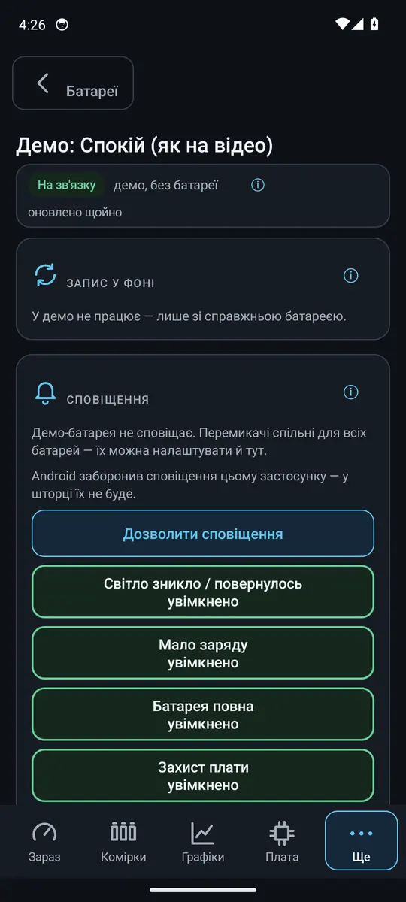
«Ще» → «Сповіщення»: вісім перемикачів.
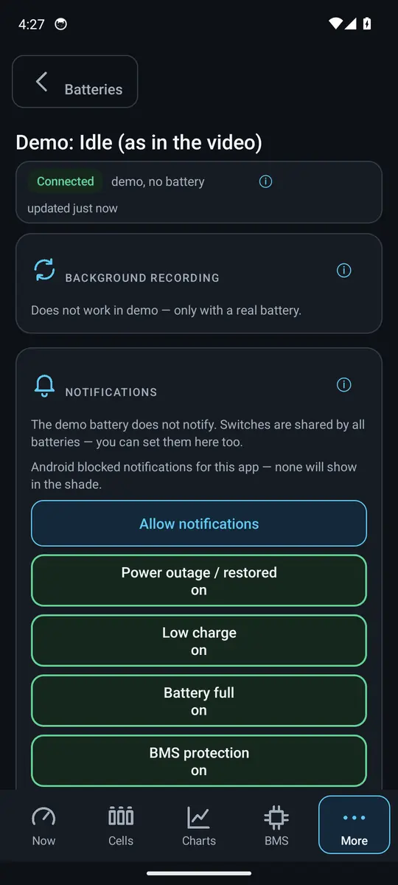
"More" → "Notifications": eight switches.
Сторож у Telegram
Guard in Telegram
Телефон лишається вдома біля батареї й пише в Telegram тобі й рідним, де б ви не були: світло зникло, мало заряду, захист плати, а щоранку — «я працюю». Сторожем може бути будь-який телефон із цим застосунком.
The phone stays at home by the battery and writes to you and your family in Telegram, wherever you are: power outage, low charge, BMS protection, and every morning "I am working". Any phone with this app can be the guard.
Сторож читає батарею тим самим «Записом у фоні» й шле лише людям, які під'єдналися твоїм кодом.The guard reads the battery with the same "Background recording" and sends only to people who joined with your code.
Свій бот (2 хв, один раз). У Telegram знайди @BotFather → «Start» → надішли /newbot. Назва — будь-яка («Батарея вдома»), ім'я — латиницею й закінчується на bot. BotFather надішле токен — довгий рядок «123456789:AA…»; скопіюй його.
На телефоні-сторожі: батарея → «Ще» → «Сторож (Telegram)» → Налаштувати сторожа → встав токен → Перевірити й увімкнути. «Запис у фоні» для цієї батареї ввімкнеться сам.
Запросити людину → перешли запрошення (собі теж). Людина відкриває посилання → «Start» — Telegram сам надсилає код, і вона в списку.
Кожен у чаті з ботом: /settings — торкаєшся видів, 🔔 надсилати, 🔕 ні, а нижче — вигляд картинки (🔵 вибрано). /status — що зараз з батареєю, /menu — кнопки «Стан усіх батарей» і «Що надсилати», /stop — більше не надсилати.
Your own bot (2 min, once). In Telegram find @BotFather → "Start" → send /newbot. Name — any ("Home battery"), username — Latin letters, ending in bot. BotFather sends a token — a long line "123456789:AA…"; copy it.
On the guard phone: battery → "More" → "Guard (Telegram)" → Set up the guard → paste the token → Check and turn on. "Background recording" for this battery turns on by itself.
Invite a person → forward the invitation (to yourself too). The person opens the link → "Start" — Telegram sends the code by itself, and they are on the list.
Everyone in the bot chat: /settings — tap the kinds, 🔔 send, 🔕 don't, and below — the picture look (🔵 chosen). /status — what the battery is doing now, /menu — the "All batteries" and "What to send" buttons, /stop — stop sending.
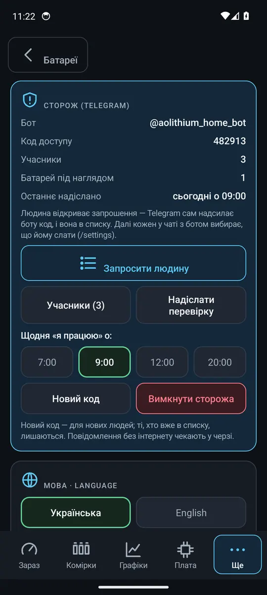
«Ще» → «Сторож (Telegram)»: бот, код, учасники, «я працюю» щодня.
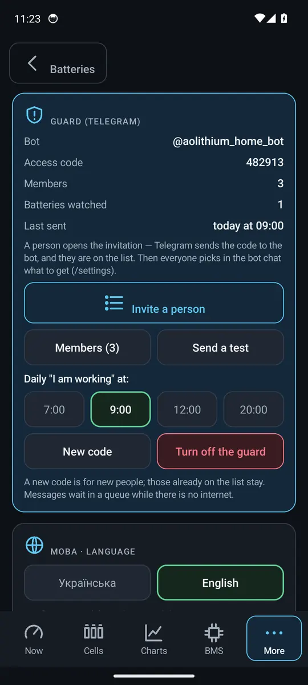
"More" → "Guard (Telegram)": bot, code, members, daily "I am working".
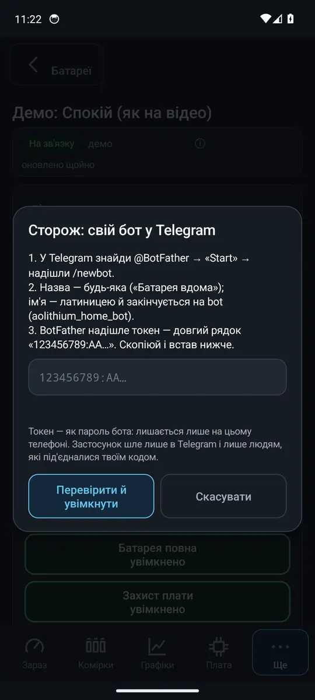
Налаштування: як отримати токен у BotFather і куди його вставити.
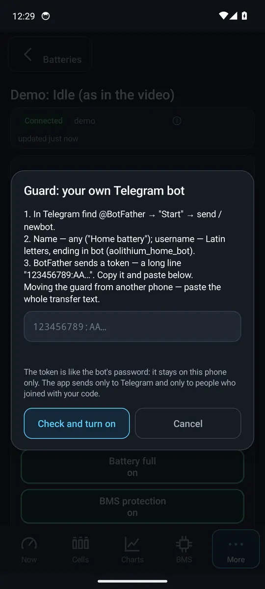
Setup: how to get the token from BotFather and where to paste it.
Що надсилає
Коли
Захист плати
спрацював захист; плата вимкнула заряд чи розряд; захист знято
Холод / спека
нижче 0 °C або вище 50 °C
Різниця комірок
як сповіщення в шторці: 30 мВ посеред заряду або 100 мВ нижче 95 %
Різкий стрибок
температура +5 °C або різниця комірок +50 мВ за 15 хв
Світло зникло / повернулось
батарея почала віддавати; і коли перестала — скільки не було
Батарея повна
щоб вимкнути генератор, навіть коли тебе нема вдома
Мало заряду, розрядилась
20 %, 10 %, 5 % і «розрядилась» (1 % і нижче)
Кожні −10 % заряду
під час розряду: 90, 80, 70… — з потужністю й скільки ще вистачить
Сторож не бачить батарею
30 хв без даних; і «знову бачу» — скільки не бачив. Щойно сказав «знову бачу» — наступне «не бачу» не раніше, ніж за годину (на межі дальності батарея то зникає, то з'являється)
Щодня «я працюю»
о вибраній годині (7, 9, 12 чи 20): стан кожної батареї. Увімкнув сторожа до цієї години (навіть уночі) — перше прийде вже сьогодні. Не прийшло — зі сторожем щось сталося.
What it sends
When
BMS protection
a protection triggered; the BMS turned off charge or discharge; protection cleared
Cold / heat
below 0 °C or above 50 °C
Cell difference
same as the shade notification: 30 mV mid-charge or 100 mV below 95 %
Sudden jump
temperature +5 °C or cell difference +50 mV within 15 min
Power outage / restored
the battery started giving power; and when it stopped — how long it lasted
Battery full
to turn off the generator even when you are away
Low charge, empty
20 %, 10 %, 5 % and "empty" (1 % and below)
Every −10 % of charge
while discharging: 90, 80, 70… — with power and how long it will last
Guard cannot see the battery
30 min without data; and "I can see it again" — for how long it was not seen. Right after "I can see it again", the next "cannot see" comes no sooner than an hour later (at the edge of range the battery comes and goes)
Daily "I am working"
at the chosen hour (7, 9, 12 or 20): the state of each battery. Turned the guard on before that hour (even at night) — the first one comes today. If it does not come, something happened to the guard.
Telegram18:02
🔌 Світло зникло🔌 Power outage🔋 Aolithium · Батарея віддає 120 Вт · 99 % · вистачить ≈ 8 год 40 хв до 20 %🔋 Aolithium · Battery discharging at 120 W · 99 % · lasts ≈ 8 h 40 min to 20 %
Telegram09:00
🟢 Сторож працює · 09:00🟢 The guard is working · 09:00🔋 Aolithium: 87 % · стоїть · 13,31 В · 15,2 °C · о 08:57🔋 Aolithium: 87 % · idle · 13.31 V · 15.2 °C · at 08:57
Керування ботом у Telegram
Controlling the bot in Telegram
Що написати боту
Що буде
/status
стан батареї зараз — картинкою й текстом
/menu
кнопки «📊 Стан усіх батарей» і «⚙️ Що надсилати й вигляд»
/settings
🔔 / 🔕 — що надсилати; 🔵 — вигляд картинки; «Готово»
/diag
файл «Дані для перевірки»: сторож читає батарею й надсилає відповіді плати, розбір і журнал зв'язку (паролі плати затерто). Його пересилають Claude — так перевіряють батарею на відстані
/stop
більше не писати в цей чат (інші чати й група — як були). Повернутись — знову надіслати код
/help
коротко, як це працює
What to send the bot
What happens
/status
the battery state now — as a picture and text
/menu
the "📊 All batteries" and "⚙️ What to send and look" buttons
/settings
🔔 / 🔕 — what to send; 🔵 — picture look; "Done"
/diag
a "Check data" file: the guard reads the battery and sends the BMS answers, the parsing and the connection log (BMS passwords blanked). Forward it to Claude — this is how the battery is checked from afar
/stop
stop writing to this chat (other chats and the group stay as they were). To come back, send the code again
/help
briefly, how it works
Усі боти в одній групі, а особисто — ні. Спершу в групі «Меню» → /status для кожного бота: відповів станом — група підключена. Тоді в особистому чаті з кожним ботом — /stop. У групі команди — лише через «Меню» (там вони з іменем бота).
All bots in one group, nothing in private. First, in the group, "Menu" → /status for each bot: if it answers with the state, the group is connected. Then send /stop in the private chat with each bot. In a group, use commands only via "Menu" (they carry the bot name there).
Картинка батареї в Telegram
Battery picture in Telegram
До кожного повідомлення сторож додає картинку батареї — як у застосунку. Вигляд кожен вибирає сам у /settings: як спідометр (вкладка «Зараз»), як віджет, віджет + комірки або без картинки. Текст той самий — підписом під картинкою. /menu → «📊 Стан усіх батарей» — одна картинка з усіма батареями цього сторожа.
The guard adds a battery picture to every message — like in the app. Everyone picks the look in /settings: like the gauge (the "Now" tab), like the widget, widget + cells or no picture. The text is the same — as the caption under the picture. /menu → "📊 All batteries" — one picture with all batteries of this guard.
Потрібен інтернет на сторожі. Коли зникає світло, роутер вимикається — тоді повідомлення чекають у черзі й підуть, щойно зв'язок повернеться. Щоб ішли одразу: роутер на тій самій батареї / ДБЖ, або SIM з мобільним інтернетом у сторожі.
Сторож — додатковий, не замість плати. Батарею захищає сама плата; сторож лише розповідає. Читає раз на ~5 хв і лише поки Bluetooth дістає.
Один бот — один сторож. Для другого сторожа (наприклад, у мами) — свій бот.
Приватність: токен — лише на телефоні-сторожі. Без коду до бота не під'єднатись; 5 хибних кодів — година паузи. Новий код — для нових людей, ті, хто вже є, лишаються. Прибрати людину — Учасники.
Тримай сторожа на зарядці й дозволь «Не обмежувати у фоні» (картка «Запис у фоні») — тоді Android його не приспить.
Кілька сторожів в одній групі (за бажанням).Запросити в групу Telegram → відкрий посилання → вибери групу (ти маєш бути її адміном). Так у одну групу «Батареї родини» можна звести свого сторожа, мамин, братів — кожне повідомлення підписане назвою батареї 🔋. Вибір у /settings тоді спільний для всієї групи; команди в групі — через кнопку «Меню».
Додав бота в групу вручну («Додати учасника») — він мовчить? Без коду група не стає учасником. Бот сам підкаже в групі, що робити: надіслати туди /start@ім'я_бота КОД (код — у картці сторожа). Або одразу Запросити в групу Telegram — посилання додає бота вже з кодом. Боти різних сторожів одне одного в групі не бачать — кожен шле свою картинку.
Копія сторожа.Зберегти копію сторожа — один текст (бот, люди, код), збережи собі (наприклад, у Telegram «Збережене»). Сторож працює далі. Якщо застосунок колись доведеться поставити заново: «Налаштувати сторожа» → встав увесь текст → «Перевірити й увімкнути» — усе повернеться. Сам токен бота завжди є й у @BotFather → /mybots → бот → «API Token».
Передати сторожа на інший телефон (за бажанням).Передати сторожа на інший телефон → «Передати»: тут сторож вимикається, а текст передачі (бот, люди, код) пересилаєш тій людині. На її телефоні: «Налаштувати сторожа» → встав увесь текст → «Перевірити й увімкнути». Людям під'єднуватись заново не треба. Текст — як ключ від бота: лише тій людині.
The guard needs internet. When the power goes out, the router turns off — then messages wait in a queue and go as soon as the connection returns. To send right away: the router on the same battery / UPS, or a SIM with mobile data in the guard.
The guard is extra, not instead of the BMS. The BMS itself protects the battery; the guard only tells. It reads every ~5 min and only while Bluetooth reaches.
One bot — one guard. For a second guard (for example, at mom's) — its own bot.
Privacy: the token stays on the guard phone only. Nobody joins the bot without the code; 5 wrong codes — an hour's pause. New code — for new people, those already there stay. Remove a person — Members.
Keep the guard on charge and allow "Don't restrict in background" (the "Background recording" card) — then Android will not put it to sleep.
Several guards in one group (optional).Invite to a Telegram group → open the link → pick the group (you must be its admin). This way your guard, mom's and your brother's can share one "Family batteries" group — each message is signed with the battery name 🔋. The /settings choice is then shared by the whole group; in a group, use the "Menu" button for commands.
Added the bot to a group by hand ("Add member") and it is silent? Without the code the group does not become a member. The bot itself tells the group what to do: send /start@bot_name CODE there (the code is on the guard card). Or use Invite to a Telegram group right away — the link adds the bot with the code. Bots of different guards do not see each other in a group — each sends its own picture.
Guard backup.Save a guard backup — one text (bot, members, code); keep it for yourself (for example, in Telegram "Saved Messages"). The guard keeps working. If the app ever has to be installed again: "Set up the guard" → paste the whole text → "Check and turn on" — everything comes back. The bot token itself is always in @BotFather → /mybots → the bot → "API Token" too.
Move the guard to another phone (optional).Move the guard to another phone → "Move": the guard turns off here, and you send the transfer text (bot, members, code) to that person. On their phone: "Set up the guard" → paste the whole text → "Check and turn on". People do not need to join again. The text is like a key to the bot: only for that person.
Віджет
Widget
Заряд на головному екрані телефона — без відкривання застосунку. Два розміри: великий 4 × 2 і малий 2 × 2.
Charge on the phone's home screen without opening the app. Two sizes: large 4 × 2 and small 2 × 2.
Затисни порожнє місце на головному екрані → «Віджети».
Знайди Aolithium Live → «Aolithium · великий» або «Aolithium · малий».
Перетягни на екран і відпусти.
Якщо в застосунку дві батареї й більше — відкриється «Яку батарею показувати?»: торкнись потрібної. Кожен віджет — свою, тож можна поставити два поруч (Aolithium і Logic Power).
Press and hold an empty spot on the home screen → "Widgets".
Find Aolithium Live → "Aolithium · великий" (large) or "Aolithium · малий" (small) — these two names are Ukrainian on any phone.
Drag it onto the screen and let go.
If the app has two or more batteries, "Which battery to show?" opens: tap the one you need. Each widget has its own, so you can put two side by side (Aolithium and Logic Power).
Кільце з відсотками, вати зі стрілкою (червона ▲ — віддає, зелена ▼ — заряджається), «вистачить на» і «записано 21:05».
Оновлюється з кожним записом — з «Записом у фоні» раз на ~5 хв, а ще щойно розблокуєш телефон (якщо останній запис старший за хвилину й телефон поруч з батареєю). Понад 15 хв без даних — сірий, з часом останнього запису.
Показує вибрану батарею. «Автоматично» (і всі віджети, поставлені до версії 0.4.16) — батарею із «Записом у фоні», а якщо такої нема — ту, з якою був останній зв'язок. Торкнись — відкриється батарея.
Змінити батарею: на Android 12 і новіших — затисни віджет → налаштування віджета; на старших — прибери віджет і додай знову.
A ring with the percent, watts with an arrow (red ▲ — giving power, green ▼ — charging), "lasts for" and "recorded 21:05".
Updates with each record — every ~5 min with "Background recording", and also as soon as you unlock the phone (if the last record is older than a minute and the phone is near the battery). After 15 min without data it turns grey and shows the last record time.
Shows the chosen battery. "Automatic" (and every widget placed before version 0.4.16) — the battery with "Background recording", or if there is none, the one last connected. Tap it to open the battery.
To change the battery: on Android 12 and newer — long-press the widget → widget settings; on older ones — remove the widget and add it again.
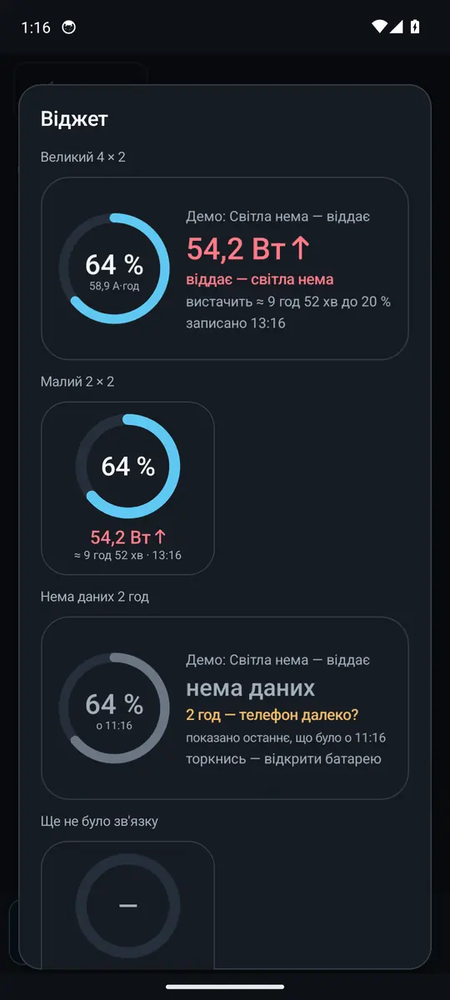
Великий і малий віджет (світла нема), нижче — як виглядає «нема даних».
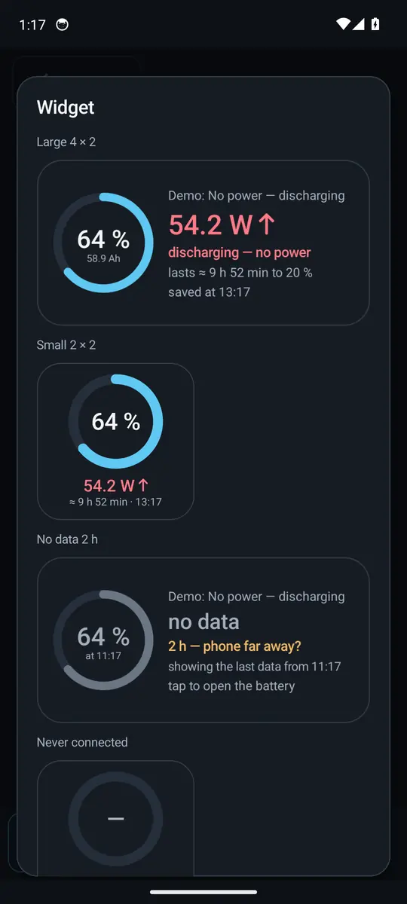
The large and small widget (no power), below — how "no data" looks.
Logic Power (JK BMS)
Друга батарея — Logic Power з платою JK BMS. Той самий застосунок, та сама схема: знайти, торкнутись, дивитись.
The second battery — Logic Power with a JK BMS. The same app, the same steps: find, tap, look.
Закрий застосунок JK BMS / Logic Power на інших телефонах — плата тримає одне підключення.
Головна → Шукати батареї поруч → у списку «Плата JK BMS» → торкнись.
Пароль плати для читання не потрібен: у JK він лише для зміни налаштувань, а застосунок їх не змінює.
Close the JK BMS / Logic Power app on other phones — the BMS keeps one connection.
Home → Find batteries nearby → "JK BMS" in the list → tap it.
No BMS password is needed for reading: in JK it is only for changing settings, and the app does not change them.
Що є понад Aolithium
Extra compared to Aolithium
Балансир JK — активний: з якої комірки в яку переливає і скільки ампер. На плитках комірок — ▲ віддає і ▼ бере, як у застосунку Logic Power.
Налаштування плати («Плата»): на якій напрузі комірки плата вимикає заряд і розряд, найбільші струми, температури, коли працює балансир. Лише показ — застосунок нічого в платі не змінює.
Опір дроту кожної комірки.
Ключі плати (MOS) — температура; підігрів.
Здоров'я й «пройдено всього» від самої плати, час роботи плати, етап заряду (на нових платах).
JK balancer — active: from which cell to which it moves charge, and how many amps. Cell tiles show ▲ gives and ▼ takes, like the Logic Power app.
BMS settings ("BMS"): at what cell voltage the BMS stops charge and discharge, maximum currents, temperatures, when the balancer works. Display only — the app changes nothing in the BMS.
Wire resistance of each cell.
BMS switches (MOS) — temperature; heater.
Health and "total passed" from the BMS itself, BMS run time, charge stage (on new boards).
Стан перевірки
Testing status
Розбір перевірено на справжніх кадрах чотирьох плат JK (програми 10, 14, 15, 19 — записи з відкритого проєкту esphome-jk-bms): напруга, струм, комірки, температури, %, ємність, цикли, налаштування — збігаються. Звірка з застосунком Logic Power на батареї в мами — ще попереду; якщо щось не так — «Журнал зв'язку» → «Поділитися» → Claude.
The parsing is checked on real frames of four JK boards (firmware 10, 14, 15, 19 — recordings from the open esphome-jk-bms project): voltage, current, cells, temperatures, %, capacity, cycles, settings all match. The comparison with the Logic Power app on the battery at mom's is still ahead; if something is wrong — "Connection log" → "Share" → Claude.
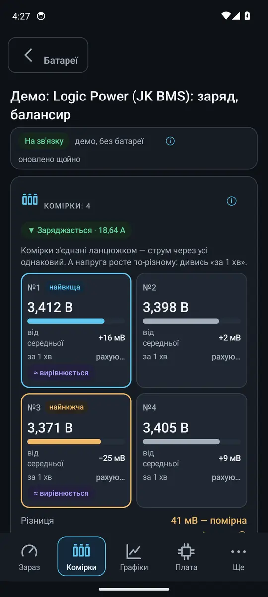
Демо Logic Power: комірки JK під час заряду; картка балансира — нижче.
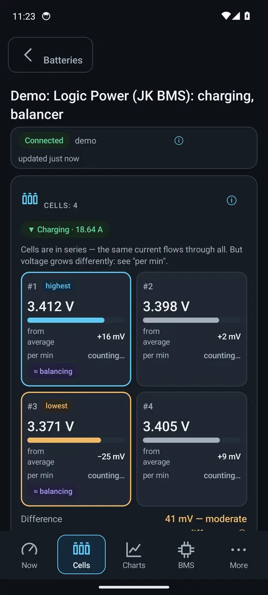
Logic Power demo: JK cells while charging; the balancer card is further down.
Демо без батареї
Demo (no battery)
Екран батареї на готових даних — ті самі байти, що шле плата. Можна подивитись усе, коли батарея далеко.
The battery screen on ready-made data — the same bytes the BMS sends. You can look at everything while the battery is far away.
Разом з екранами змінюються сповіщення, рядок «Запис у фоні» й віджет; числа — «13,31 В» ↔ «13.31 V».
Інструкція — завжди мовою застосунку. «UA / EN» угорі інструкції (поруч з «← Батареї») теж перемикають мову всього застосунку: демо, сповіщення й віджет — тією ж мовою.
Home, at the top: the EN button — everything in English; the same spot shows UA to go back to Ukrainian. Next to it, ? opens this guide.
Notifications, the "Background recording" line and the widget switch together with the screens; numbers — "13,31 В" ↔ "13.31 V".
The guide is always in the app's language. "UA / EN" at the top of the guide (next to "← Batteries") also switch the whole app: demos, notifications and the widget use the same language.
Що означають числа
What the numbers mean
Коротко про головні показники. Докладно про кожен — «Ще» → «Довідник» або ⓘ біля рядка.
The main values in brief. Details on each — "More" → "Glossary", or ⓘ next to the line.
Показник
Що це
Заряд, %
скільки відсотків вважає плата; під ним — залишок з повної ємності в А·год
Струм
плюс — заряджається, мінус — віддає
Потужність
напруга × струм, у ватах; червона — віддає, зелена — бере
Комірки
4 по ~3,3 В; різниця до 30 мВ — рівно, 30–100 — помірно, понад 100 — варто стежити
Вирівнювання
плата підтягує комірки одна до одної наприкінці заряду — це нормально
Захист
плата сама вимкнула заряд чи розряд (холод, перегрів, перезаряд…); застосунок каже, що саме і що робити
Повна (знає плата)
ємність, яку плата вважає повною; може бути менша за етикетку
Value
What it is
Charge, %
the percent the BMS calculates; below it — what is left of full capacity in Ah
Current
plus — charging, minus — giving power
Power
voltage × current, in watts; red — giving, green — taking
Cells
4 of ~3.3 V; a difference up to 30 mV is even, 30–100 moderate, over 100 worth watching
Balancing
the BMS brings the cells level at the end of charge — this is normal
Protection
the BMS itself turned off charge or discharge (cold, overheating, overcharge…); the app says what exactly and what to do
Full (BMS knows)
the capacity the BMS considers full; it can be less than the label
Як це звалось в Aolithium 1.3
What Aolithium 1.3 called it
Aolithium 1.3
Aolithium Live
Charge Switch: open
Заряд: дозволено
Discharge Switch: open
Розряд: дозволено
Balance State: close
зараз не вирівнює
Protection State: close
Захист: усе гаразд
Residual / Nominal Capacity
Залишок / Повна (знає плата)
Average voltage
середня напруга комірки (тут — ще й кожна окремо)
Aolithium 1.3
Aolithium Live
Charge Switch: open
Charge: allowed
Discharge Switch: open
Discharge: allowed
Balance State: close
not balancing now
Protection State: close
Protection: all fine
Residual / Nominal Capacity
Remaining / Full (BMS knows)
Average voltage
average cell voltage (here — also each cell separately)
Встановити й оновити
Install and update
Нова версія ставиться поверх старої: батареї, історія й налаштування лишаються. Видаляти застосунок не треба ніколи.
A new version installs over the old one: batteries, history and settings stay. You never need to remove the app.
Телефон з Termux (A26, M30s)
Phone with Termux (A26, M30s)
Меню AOLITHIUM LIVE → 2 «Встановити нову версію з GitHub».
Android спитає «Оновити застосунок?» — Оновити.
Вікно встановлення сховалось — пункт 10.
Menu AOLITHIUM LIVE → 2 "Install the new version from GitHub".
Android asks "Update the app?" — Update.
If the install window hid — item 10.
Телефон без Termux (Huawei Mate 10 Lite)
Phone without Termux (Huawei Mate 10 Lite)
На A26: меню AOLITHIUM LIVE → 4 — там покроково, як поставити через браузер (завантажити APK з GitHub і дозволити встановлення з браузера).
On the A26: menu AOLITHIUM LIVE → 4 — step by step how to install through the browser (download the APK from GitHub and allow installs from the browser).
З Google Диска автора (будь-який телефон)
From the author's Google Drive (any phone)
Без Termux і без браузера: головна, унизу «Оновлення застосунку» → Перевірити оновлення → «Завантажити й встановити». Докладно — «Оновити з Google Диска».
No Termux and no browser: home screen, "App update" at the bottom → Check for updates → "Download and install". Details — "Update from Google Drive".
Яка версія стоїть: унизу головної — «v0.4.18 · build …» і рядок «Встановлено» в картці «Оновлення застосунку». Ця інструкція — для версії 0.4.18.
Which version is installed: at the bottom of the home screen — "v0.4.18 · build …", and the "Installed" line in the "App update" card. This guide is for version 0.4.18.
Оновити з Google Диска
Update from Google Drive
Нова версія ставиться поверх: батареї, історія й налаштування лишаються. Головна, унизу — картка «Оновлення застосунку».
A new version installs over the old one: batteries, history and settings stay. Home screen, at the bottom — the "App update" card.
Через інтернет іде лише запит файлів з Диска автора. Про батарею — нічого.Only a request for files from the author's Drive goes over the internet. Nothing about the battery.
Перевірити й встановити
Check and install
Головна, унизу картка «Оновлення застосунку» → Перевірити оновлення. Застосунок без входу в Google читає маленький файл версії на Диску автора.
«Є нова версія» → Завантажити й встановити. Застосунок завантажує й перевіряє файл; щось не так — нічого не ставить і пише чому.
Уперше Android попросить «Дозволити з цього джерела» → увімкни → «Назад». Встановлення продовжиться саме.
Вікно Android «Оновити» → Оновити. Якщо Google Play Захист попередить — «Усе одно встановити».
Home screen, the "App update" card at the bottom → Check for updates. Without signing in to Google, the app reads a small version file on the author's Drive.
"A new version is available" → Download and install. The app downloads and checks the file; if something is wrong, it installs nothing and says why.
The first time, Android asks to "Allow from this source" → turn it on → "Back". The installation continues by itself.
The Android "Update" window → Update. If Google Play Protect warns — "Install anyway".
Перевіряти самому раз на день
Check by itself once a day
Так (так і стоїть спершу) — під час відкриття застосунку, тихо. Скаже лише тоді, коли є нова версія. Ні — лише кнопкою.
Yes (the default) — when the app opens, quietly. It speaks up only when there is a new version. No — only with the button.
Інше посилання
Another link
Автор каже, що вийшла новіша, а тут «У тебе остання версія»? Скопіюй посилання від автора → Інше посилання у тому ж вікні або в картці. Посилання — на файл aolithium-live-onovlennia.json, не на APK.
The author says a newer one is out, but here it says "You have the latest version"? Copy the link from the author → Another link in the same window or in the card. The link is to the aolithium-live-onovlennia.json file, not to the APK.
З версії 0.4.6 посилання вбудоване — вставляти нічого не треба. Застосунок пробує і збережене, і вбудоване посилання та бере найновішу версію.
Since version 0.4.6 the link is built in — nothing needs pasting. The app tries both the saved and the built-in link and takes the newest version.
Для автора: опублікувати версію
For the author: publish a version
У тій самій картці — Опублікувати цю версію на Диск (автор).
Один раз: кроки 1–2 — вибрати два готові файли на Диску (у вікні вибору ☰ → «Google Диск» → AppsAndroidSync → AolithiumLive → App → торкнутись файлу). Посилання на них уже вбудовані, кроків 3–4 немає. Треба інші файли — Змінити посилання на файли (автор).
Далі після кожної нової версії — лише Опублікувати зараз. Застосунок кладе свій встановлений APK у ті самі файли — посилання не змінюється. Google Диск вивантажує їх у фоні, тож застосунок ще кілька хвилин сам перевіряє через інтернет, що інші телефони бачать саме цю версію: «Опубліковано й перевірено» — дійшло; «НЕ ДІЙШЛО до Диска» — відкрий Google Диск, перевір інтернет і натисни ще раз.
Публікувати автоматично → Так (спершу — «Ні») — тоді й натискати нічого не треба: відкрив застосунок новою версією — телефон сам кладе її на Диск і перевіряє. Тихо, без вікон; результат — рядком у картці «Оновлення застосунку».
Поділитися посиланням на оновлення — надіслати посилання комусь вручну.
In the same card — Publish this version to Drive (author).
Once: steps 1–2 — pick the two ready files on Drive (in the picker ☰ → "Google Drive" → AppsAndroidSync → AolithiumLive → App → tap the file). Their links are already built in; there are no steps 3–4. Need other files — Change the file links (author).
After each new version — only Publish now. The app puts its installed APK into the same files, so the link does not change. Google Drive uploads them in the background, so for a few more minutes the app checks over the internet that other phones see exactly this version: "Published and checked" — it arrived; "DID NOT REACH Drive" — open Google Drive, check the internet and tap again.
Publish automatically → Yes (at first — "No") — then there is nothing to tap: open the app with a new version and the phone puts it on Drive and checks it by itself. Quietly, without windows; the result is a line in the "App update" card.
Share the update link — send the link to someone by hand.
Жовте попередження у вікні публікації? Файл версії на Диску не той, що вбудований у застосунок. Інші телефони його не побачать — напиши в чат, перш ніж вибирати чи створювати файли заново.
A yellow warning in the publish window? The version file on Drive is not the one built into the app. Other phones will not see it. Write to the chat before picking or creating the files again.
Безпека й приватність
Safety and privacy
Застосунок лише дивиться. Батарею захищає сама плата — числа тут довідкові.
The app only looks. The BMS itself protects the battery — the numbers here are for reference.
У плату йдуть тільки запити читання. Будь-яку іншу команду код відмовляється зібрати, а тест це стереже.Only read requests go to the BMS. The code refuses to build any other command, and a test guards this.
Нічого не змінює в платі: ні налаштувань, ні ключів заряду й розряду. Зміна налаштувань колись можлива лише після резервної копії й окремого «так».
Інтернет — лише для оновлень і сторожа: застосунок читає з Google Диска автора файл версії й APK (картка «Оновлення застосунку»), а перед встановленням перевіряє файл. Історія, батареї й налаштування — лише в телефоні.
Сторож у Telegram — вимкнений, поки ти сам його не ввімкнеш і не вставиш токен свого бота. Тоді стан батареї йде лише в Telegram і лише людям, які під'єдналися твоїм кодом.
Ділишся лише ти: CSV зберігається туди, куди вибереш; журнал зв'язку йде, лише коли натиснеш «Поділитися».
Звідки знання: протоколи плат відкриті — бібліотеки aiobmsble, esphome-jbd-bms і esphome-jk-bms (Apache-2.0). Код Aolithium не копіювався й не розбирався.
Changes nothing in the BMS: no settings, no charge or discharge switches. Changing settings may come one day, only after a backup and a separate "yes".
Internet only for updates and the guard: the app reads the version file and the APK from the author's Google Drive ("App update" card) and checks the file before installing. History, batteries and settings stay on the phone only.
Guard in Telegram is off until you turn it on yourself and paste your own bot's token. Then the battery state goes only to Telegram and only to people who joined with your code.
Only you share: CSV is saved where you choose; the connection log leaves only when you tap "Share".
Where the knowledge comes from: the BMS protocols are open — the aiobmsble, esphome-jbd-bms and esphome-jk-bms libraries (Apache-2.0). The Aolithium code was not copied or taken apart.
Що змінилось
What's new
Усі версії, новіші — зверху.
All versions, newest first.
Версія
Що нового
0.4.13 · 21.10.2026
з'єднання з батареєю коротше на ~2,5 с (плата Aolithium не губить першу команду); на краю дальності фон пробує ще раз через 2 хв
0.4.12 · 21.10.2026
сторож: за бажанням — у групу Telegram (кілька сторожів в одному чаті) і передача на інший телефон разом з людьми й кодом; ім'я бота не ламається
0.4.11 · 21.10.2026
сторож у Telegram: телефон удома пише тобі й рідним — світло, заряд, захист, кожні −10 %, щоранку «я працюю»; кожен сам вибирає, що отримувати; версія «0.4.10 · збірка 26» більше не переноситься
0.4.10 · 20.10.2026
запис у фоні спершу шукає батарею в ефірі й пробує тричі — менше «нема зв'язку» поруч з батареєю; у кожному вікні заголовок згори й кнопки знизу завжди видно, прокручується середина; журнал зв'язку — свіжіші зверху
0.4.9 · 20.10.2026
сповіщення «Заряджається» зі смужкою й часом до повної; віджет оновлюється, щойно розблокуєш телефон; одна порада «раз на 1–2 тижні до 100 %»
0.4.8 · 20.10.2026
довідник: чому повна ємність менша за етикетку, чи варто розряджати до нуля, як берегти батарею
0.4.7 · 20.10.2026
одна мова скрізь: «UA / EN» в інструкції перемикають увесь застосунок, демо відкриваються тією ж мовою
0.4.6 · 20.10.2026
посилання на оновлення з Google Диска вбудовані; автор лише вибирає два готові файли
0.4.5 · 20.10.2026
інструкція пам'ятає місце в кожному розділі (і після демо); її «UA / EN» — у рядку з «← Батареї»; оновлення з Google Диска
0.4.4 · 20.10.2026
ця інструкція — двома мовами, зі схемами й знімками (замість старої «Довідки»); на головній — «UA» / «EN» і значок ?, кнопки однакові, назва більша
0.4.3 · 20.10.2026
головна не стрибає при зміні мови; рівні комірки — обидві з рамкою; ⓘ не падає на новий рядок
0.4.2 · 20.10.2026
англійська мова; рядки відключень не ховають відсоток
0.4.1 · 20.10.2026
плитки «Відключення світла» в один рядок; своя історія демо Logic Power
0.4.0 · 20.10.2026
Logic Power (плата JK BMS): пошук, комірки, балансир зі струмом, опір дротів, ключі, захисти; демо
0.3.4 · 20.10.2026
«Назад» з демо повертає в довідку на те саме місце
0.3.3 · 20.10.2026
екран не стрибає при підключенні: рядок «Зв'язок» сталої висоти
0.3.2 · 19.10.2026
мітка «найнижча» — на справжній найнижчій комірці
0.3.1 · 19.10.2026
віджети великий і малий; час читання у верхньому рядку шторки
0.3.0 · 19.10.2026
сповіщення (7 видів) і «Перевірити сповіщення»
0.2.6 · 19.10.2026
плитки комірок не «пливуть»; рядки спідометра не налазять
0.2.5 · 19.10.2026
запис у фоні раз на ~5 хв; «Зберегти CSV»; екран не повертається
0.2.4 · 19.10.2026
спідометр зі стрілками, «вистачить на» / «до повної», комірки плитками, відключення світла, найнижчий за днями, хто відстає, зарядний
0.2.3 · 19.10.2026
довгі значення не вилазять за край; сигнал словом; графіки не стрибають
0.2.2 · 18.10.2026
кнопки на всю ширину, і у вікнах
0.2.1 · 18.10.2026
без зв'язку всі вкладки показують останні дані або прочерки
0.2.0 · 18.10.2026
5 вкладок, спідометр із зонами, графіки й історія, довідник, здоров'я, порада щодо зарядного
0.1.2 · 18.10.2026
список у пошуку не стрибає; підказка «батарея далеко»
0.1.1 · 18.10.2026
надійніше підключення (помилка 133 на A26)
0.1.0 · 16.10.2026
перша версія: пошук, підключення, кожна комірка, захисти, журнал зв'язку, демо
Version
What's new
0.4.13 · 21.10.2026
connecting to the battery is ~2.5 s shorter (the Aolithium BMS no longer loses the first command); at the edge of range, background tries again in 2 min
0.4.12 · 21.10.2026
guard: optionally into a Telegram group (several guards in one chat) and moving to another phone together with members and code; the bot name no longer breaks
0.4.11 · 21.10.2026
guard in Telegram: a phone at home writes to you and your family — power, charge, protection, every −10 %, "I am working" every morning; everyone picks what to get; the version "0.4.10 · build 26" no longer wraps
0.4.10 · 20.10.2026
background recording first looks for the battery on air and tries three times — fewer "no connection" near the battery; in every window the title on top and the buttons at the bottom are always visible, the middle scrolls; connection log — newest on top
0.4.9 · 20.10.2026
"Charging" notification with a progress bar and time to full; the widget updates as soon as you unlock the phone; one tip "every 1–2 weeks to 100%"
0.4.8 · 20.10.2026
glossary: why full capacity is below the label, whether to drain to zero, how to look after the battery
0.4.7 · 20.10.2026
one language everywhere: "UA / EN" in the guide switch the whole app, demos open in the same language
0.4.6 · 20.10.2026
the Google Drive update links are built in; the author only picks two ready files
0.4.5 · 20.10.2026
the guide remembers your place in every section (also after a demo); its "UA / EN" is in the row with "← Batteries"; update from Google Drive
0.4.4 · 20.10.2026
this guide — in two languages, with diagrams and screenshots (instead of the old "Help"); home shows "UA" / "EN" and a ? icon, equal buttons, a bigger name
0.4.3 · 20.10.2026
home does not jump when the language changes; equal cells both get a frame; ⓘ no longer drops to a new line
0.4.2 · 20.10.2026
English language; outage rows no longer hide the percent
0.4.1 · 20.10.2026
"Power outages" tiles on one line; own history for the Logic Power demo
0.4.0 · 20.10.2026
Logic Power (JK BMS): search, cells, balancer with current, wire resistance, switches, protections; demo
0.3.4 · 20.10.2026
"Back" from a demo returns to help at the same place
0.3.3 · 20.10.2026
the screen does not jump when connecting: a fixed-height "Connection" line
0.3.2 · 19.10.2026
the "lowest" mark is on the truly lowest cell
0.3.1 · 19.10.2026
large and small widgets; read time in the top row of the shade
0.3.0 · 19.10.2026
notifications (7 kinds) and "Test notifications"
0.2.6 · 19.10.2026
cell tiles do not "float"; speedometer lines do not overlap
0.2.5 · 19.10.2026
background recording every ~5 min; "Save CSV"; the screen does not rotate
0.2.4 · 19.10.2026
speedometer with arrows, "lasts for" / "until full", cell tiles, power outages, lowest by day, lagging cell, charger
0.2.3 · 19.10.2026
long values stay inside; signal in words; charts do not jump
0.2.2 · 18.10.2026
full-width buttons, in windows too
0.2.1 · 18.10.2026
without a connection all tabs show the last data or dashes
0.2.0 · 18.10.2026
5 tabs, speedometer with zones, charts and history, glossary, health, charger advice
0.1.2 · 18.10.2026
the search list does not jump; "battery far away" hint
0.1.1 · 18.10.2026
more reliable connection (error 133 on the A26)
0.1.0 · 16.10.2026
first version: search, connection, each cell, protections, connection log, demo